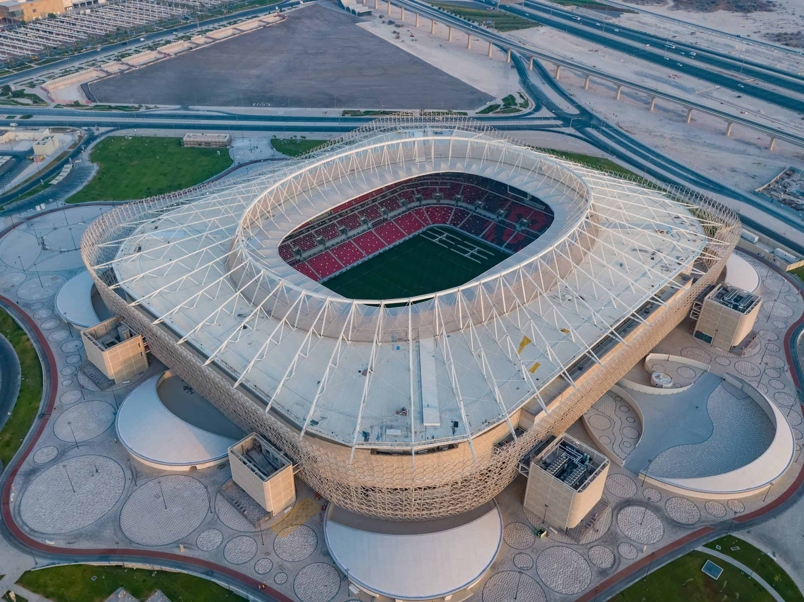

Estádio Ahmad bin Ali, (em árabe : ملعب أحمد بن علي ), popularmente conhecido como Estádio Al-Rayyan , é um estádio multiuso em Al Rayyan , Qatar , atualmente é usado principalmente para partidas de futebol e é o lar do Al-Rayyan Sports Club e do Al-Kharitiyath Sports Club . O estádio tem o nome de Ahmad bin Ali Al Thani , o Emir do Catar de 1960 a 1972. O antigo estádio, construído em 2003, tinha capacidade para 21.282 e foi demolido em 2015. O novo Estádio Al Rayyan tem capacidade para 44.740 lugares.
O Estádio Ahmad bin Ali é um dos oito estádios sendo convertidos para a Copa do Mundo da FIFA 2022 no Catar. O antigo Estádio Ahmad bin Ali foi demolido em 2015 para dar lugar ao Estádio Al Rayyan. Prevê-se que 90% dos escombros resultantes da demolição do estádio sejam reutilizados para o novo estádio ou para projetos de arte pública. A construção do novo estádio começou no início de 2016. Isso foi feito pela joint venture entre Al-Balagh e Larsen & Toubro . Após a Copa do Mundo, o estádio será reduzido para 21.000 lugares. O novo estádio foi construído para a Copa do Mundo FIFA de 2022 , que o Catar sediará. A reforma inclui uma enorme 'fachada de mídia' com uma membrana que funcionará como uma tela para projeções, notícias, comerciais, atualizações esportivas, informações atuais do torneio e partidas. A capacidade de assentos foi aumentada para 40.740, e todos os assentos foram sombreados. A inauguração do estádio ocorreu em 18 de dezembro de 2020, que foi o Dia Nacional do Catar , e exatamente dois anos antes do país sediar a final da Copa do Mundo de 2022 . O estádio foi um dos dois locais usados para a Copa do Mundo de Clubes da FIFA 2020. O estádio sediou quatro partidas durante a Copa Árabe FIFA 2021 .
O Estádio Ahmad bin Ali sediará sete partidas durante a Copa do Mundo FIFA de 2022.
